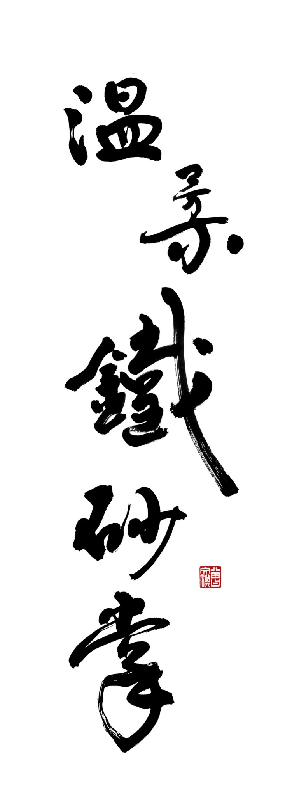

大型機具零件
依需求鍛造大型機械設備所需鐵件。
七十年爐火，一生職人精神。
用雙手鍛造鐵，也鍛造了一生的堅持。
高其畑先生，86歲，投入傳統打鐵工藝近七十年。
多年來始終堅持以傳統鍛造技法製作大型鐵件，專精於大型機具零件、船舶零件及各式客製化鐵件。在快速機械化的年代，他仍保留最傳統的打鐵方式，一鎚一鎚鍛打出兼具實用與耐久的作品，也保存了一項逐漸消失的台灣工藝文化。
如今，雖已高齡，他依然捨不得放下鐵錘。他笑著說打鐵是活絡筋骨的健康勞動，還能鍛鍊大腦靈活。
「打鐵不只靠體力，更憑真技術；
耐得住高溫淬鍊，千錘百鍊，
敲打出一甲子的鋼鐵精神！」
近七十年來，每天與火爐、鐵鎚相伴。對高其畑而言，每一次鍛打，都是與鐵對話。

依需求鍛造大型機械設備所需鐵件。
製作各式船舶相關鐵件與特殊零件。
依照用途、尺寸及需求，量身打造特殊鐵件。
堅持手工鍛打，保留最傳統的技術與精神。
鐵，需要火候。
工藝，需要歲月。
職人，需要一輩子的堅持。
此區將替換為高其畑師傅官方照片。照片來源／版權所有：高其畑。網站提供之官方照片可供新聞媒體報導及人物介紹使用；商業用途請事先取得授權。
高其畑師傅目前仍每天於鐵舖工作，打鐵是他一生的志業與熱愛。由於年事已高，目前已不再接受新的合作客戶與鐵件製作委託。
如有教育單位及文化相關機構提出採訪或拍攝需求，可直接與高其畑先生聯絡。如涉及商業拍攝，請先洽聯絡人高小姐。
可以。網站提供之官方照片可供新聞媒體報導及人物介紹使用，刊登時請註明「照片來源／版權所有：高其畑」。若作為商業用途、出版品、廣告或其他非新聞報導使用，請事先取得授權。
教育單位、文化單位採訪
高其畑先生
高小姐（高其畑先生的女兒）
LINE ID · sun114422